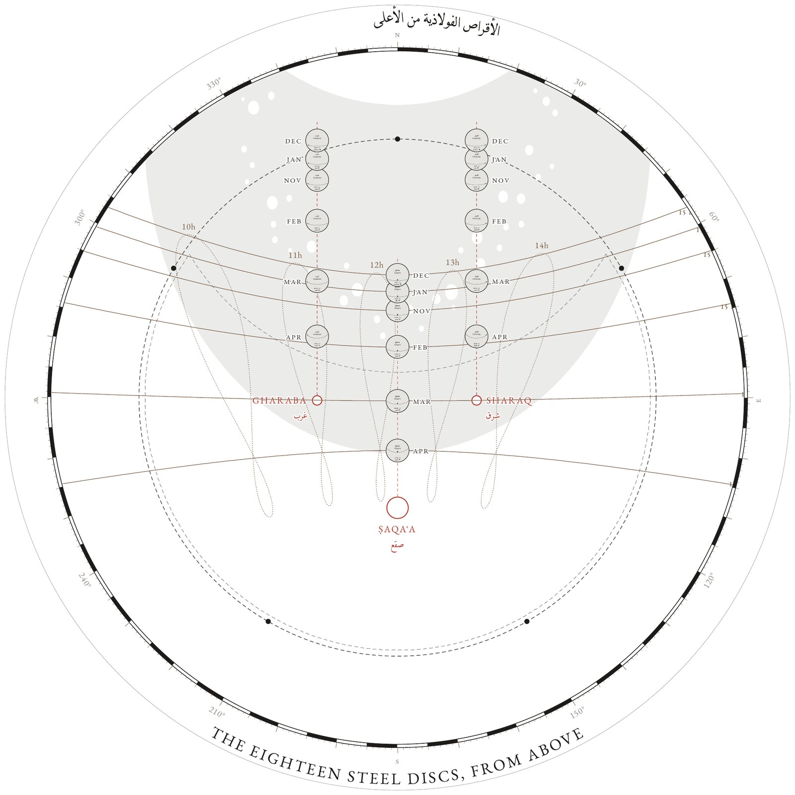

Names of the Sun
1e
Triennial Activations
Documentation of Resistant Atlas’s activations at the Sharjah Architecture Triennial 03 (2026–27).
As the Sun Rests, 2026
Names of the Sun Canopy
Sharjah Architecture Triennial 03, Al Qasimiyah School, Sharjah
November 14, 2026 – April 14, 2027
look up.

look down.


Talk
Names of the Sun
November 15, 2026
Al Qasimiyah School, Sharjah Architecture Triennial 03
Time-lapses: Sahil